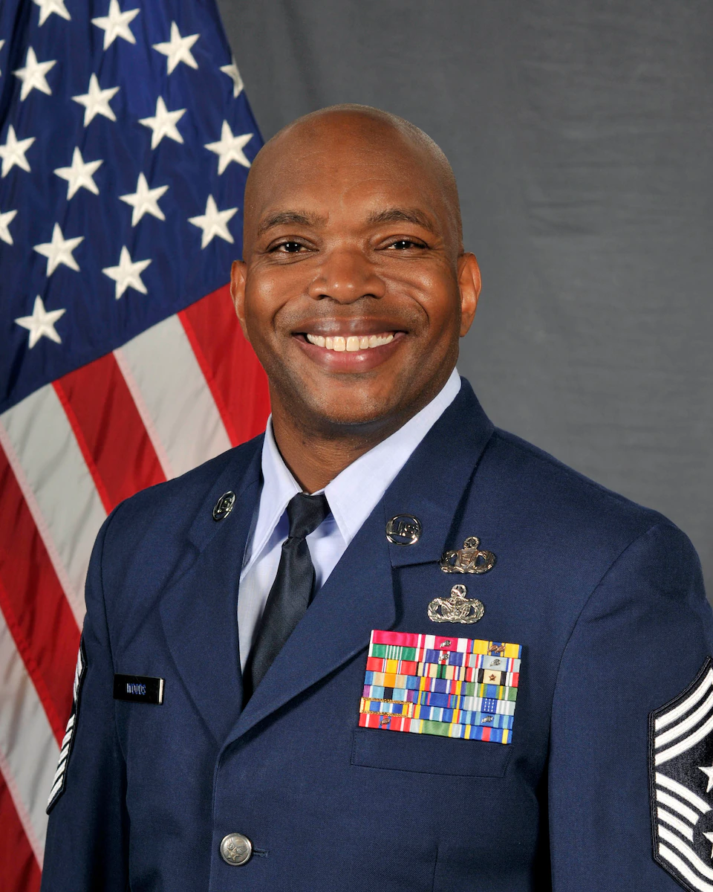

Command Chief Master Sergeant for Fifth Air Force. He is responsible to the commander for the operational utilization, readiness, assignment, morale and welfare of 15,000 combat-ready personnel across three main operating bases, delivering combat airpower, command and control, personnel recovery, surveillance and rapid mobility.

Commander of the Air Force's largest combat wing, provides the Commander, U.S. Indo-Pacific Command, trained and equipped tactical air superiority forces; combat search and rescue forces; command and control platforms; aeromedical evacuation capability; and global mobility resources for contingency operations.
Command Chief Master Sergeant for the largest combat wing in the U.S. Air Force. He provides the Commander, U.S. Indo-Pacific Command, trained and equipped tactical air superiority forces; combat search and rescue forces; command and control platforms; aeromedical evacuation capability; and global mobility resources for contingency operations.
Commander of the 353d Special Operations Wing, Kadena Air Base, Japan. The wing employs 1,100 special operations personnel across seven squadrons at Kadena and Yokota Air Bases, supporting operations throughout U.S. Indo-Pacific Command's area of responsibility by providing combat-ready Special Tactics Teams, MC-130J Commando II, and CV-22B Osprey aircraft.

Command Chief Master Sergeant for the 353d Special Operations Wing, Kadena Air Base, Japan. The wing employs 1,100 special operations personnel across seven squadrons at Kadena and Yokota Air Bases, supporting operations throughout U.S. Indo-Pacific Command's area of responsibility by providing combat-ready Special Tactics Teams, MC-130J Commando II, and CV-22B Osprey aircraft.